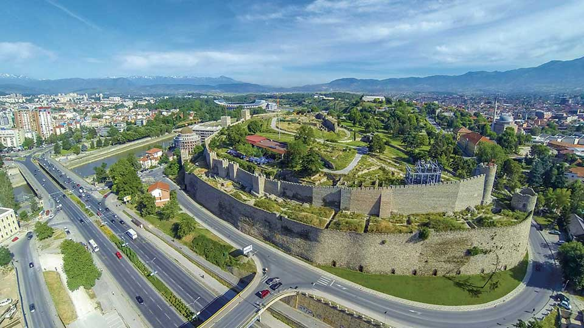
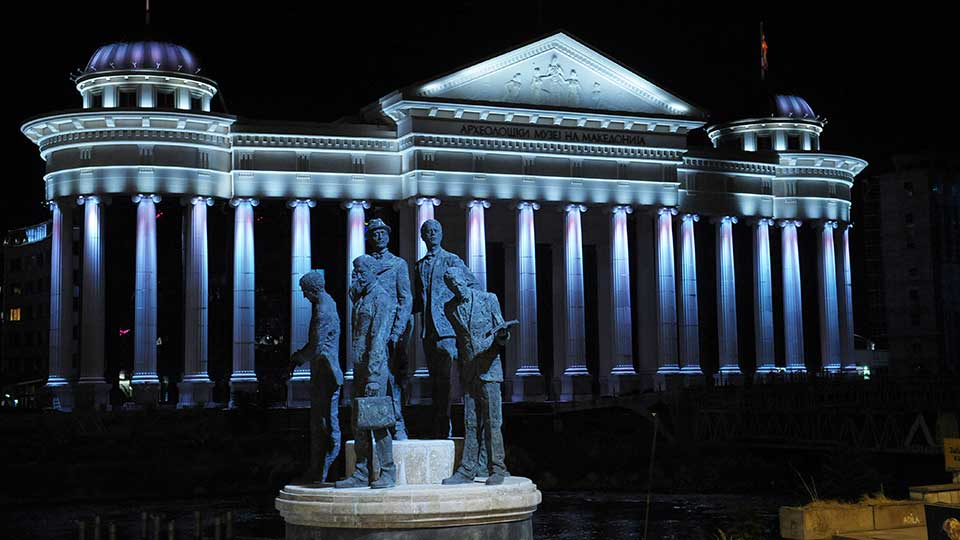

Скопие
Кале – Крепост на Юстиниан Първи
Каменният мост като символ на Скопие от XV век

Кале – Крепост на Юстиниан Първи |
 |
Каменният мост като символ на Скопие от XV век |
|
Паметници в централната градска част |
 |